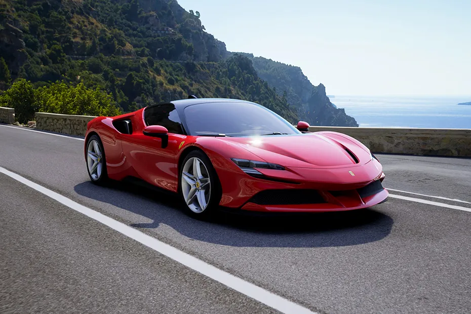
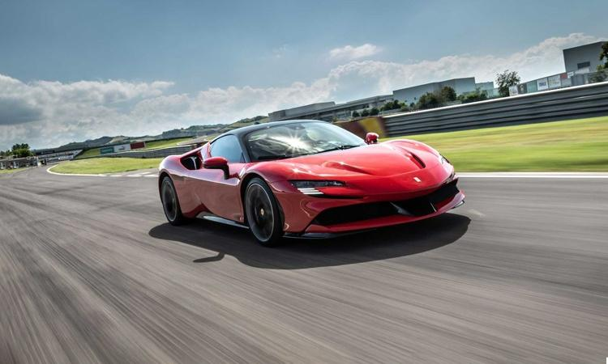
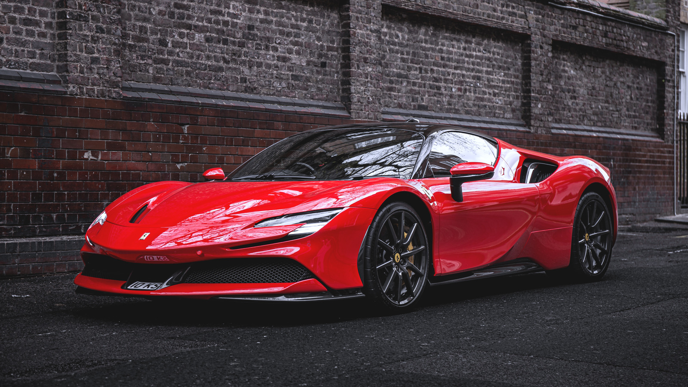

Ferrari

Enzo Ferrari, un apasionado del automovilismo desde temprana edad,
fundó Scuderia Ferrari en 1939 como una división de carreras de Alfa
Romeo. Esta incipiente escudería no solo competía, sino que también
trabajaba en el desarrollo de automóviles de competición para Alfa
Romeo. Sin embargo, después de la Segunda Guerra Mundial, Ferrari
separó su empresa de Alfa Romeo y fundó Ferrari S.p.A. en 1947.
El primer automóvil de carretera de Ferrari, el 125 S, hizo su debut
en ese mismo año. Equipado con un motor V12, este automóvil marcó el
inicio de una legendaria línea de vehículos deportivos de lujo que
llevarían el icónico emblema del "Cavallino Rampante" (caballo
rampante).
Durante la década de 1950, Ferrari dominó las competiciones de
automovilismo, especialmente en la Fórmula 1. Pilotos como Alberto
Ascari y Juan Manuel Fangio llevaron a Ferrari a múltiples campeonatos
de pilotos y constructores, estableciendo la marca como una potencia
indiscutible en las carreras.
El Ferrari 250 GTO, lanzado en 1962, se convirtió en uno de los
automóviles más emblemáticos y valiosos jamás construidos. Con solo 39
unidades producidas, este automóvil encarna la pasión y la
exclusividad que define a la marca Ferrari.
A lo largo de las décadas de 1970 y 1980, Ferrari diversificó su línea
de productos con la introducción de automóviles de carretera de lujo
como el Ferrari Daytona, el Ferrari Testarossa y el icónico Ferrari
F40. Estos modelos no solo aumentaron la popularidad de la marca, sino
que también consolidaron su reputación como símbolo de prestigio y
rendimiento.
En la Fórmula 1, Ferrari continuó compitiendo con determinación,
aunque enfrentó desafíos y rivalidades con equipos como McLaren y
Williams en las décadas de 1980 y 1990. Sin embargo, la llegada de
pilotos como Michael Schumacher marcó una nueva era de éxito para la
escudería italiana, con múltiples campeonatos tanto de pilotos como de
constructores.
Marcas de automóviles con las que Ferrari ha competido
- McLaren
- Williams
- Mercedes-Benz
- Alfa Romeo
- Aston Martin
- Porsche
- Jaguar
- Lotus
- Ford
- Renault
| Modelo | Año | Motor | Potencia | Velocidad Máxima | Aceleración 0-100 km/h |
|---|---|---|---|---|---|
| Ferrari 488 GTB | 2015 | V8 twin-turbo | 670 CV | 330 km/h | 3.0 segundos |
| Ferrari SF90 Stradale | 2019 | V8 twin-turbo + 3 motores eléctricos | 1000 CV | 340 km/h | 2.5 segundos |
| Ferrari F8 Tributo | 2019 | V8 twin-turbo | 720 CV | 340 km/h | 2.9 segundos |
| Ferrari 812 Superfast | 2017 | V12 | 800 CV | 340 km/h | 2.9 segundos |
| Ferrari Portofino M | 2018 | V8 turbo | 620 CV | 320 km/h | 3.45 segundos |
-

- 
-

- 
- 
Para mas informacion visita esta pagina